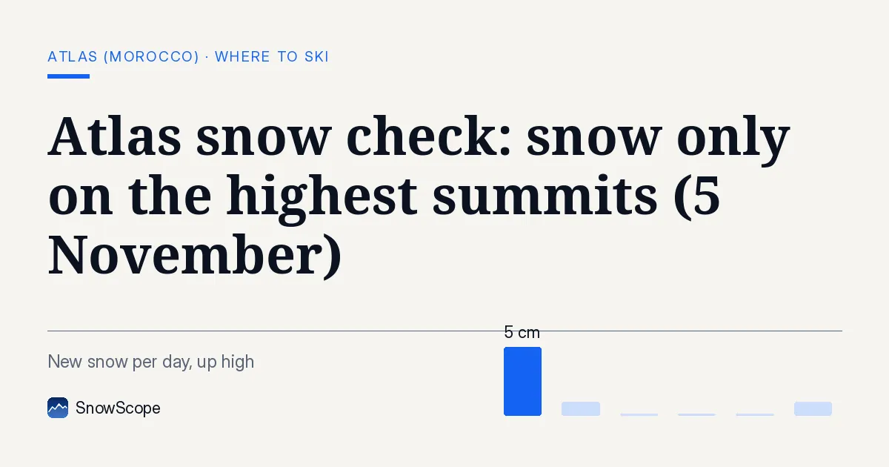

Atlas snow check: snow only on the highest summits (5 November)
Early November brought snow to the Atlas high summits, but all three ski resorts sit bare today. The snow map shows just 60 km² of white cover, confined to peaks above 3,000 m, with the deepest accumulation reaching about 11 cm. The brief early-season pulse is now shrinking fast.
See the live snow forecast for Oukaimden in the SnowScope appSnow depth, powder alerts and the 3D map, free.
What the snow map shows today
On 3 November, the Atlas held 750 km² of snow cover. Two days later, that has fallen to 60 km². The story is one of rapid melt: a thin early-season dusting that arrives quickly but vanishes just as fast in autumn warmth. The snow now clings only to the highest summits, where air temperatures stay low enough to preserve it.
Oukaimden received 6 cm of new snow across the past 72 hours before 5 November, the most active period. That fresh fall landed between 3 November and 4 November. By today, nothing new has arrived. Habri and Michlifen have recorded no snow at all in the same window.
| Resort | Snow depth | New snow, 72 h | Coming, next days | Top |
|---|---|---|---|---|
| Oukaimden | 0 cm | 6 cm | 1 cm | 3,241 m |
| Habri | 0 cm | 0 cm | 0 cm | 2,108 m |
| Michlifen | 0 cm | 0 cm | 0 cm | 1,932 m |

Altitude matters more than the resort name
All three resorts—Oukaimden at 3,241 m, Habri at 2,108 m, and Michlifen at 1,932 m—report zero snow on their upper slopes as of 5 November. The snow that does exist sits only on bare ground above the ski terrain, in the zone where altitude and exposure trump everything else. This is not unusual for early November in Morocco: the typical snow depth on this date near Oukaimden, measured at 2,930 m in past winters, was 0 cm in 34 out of 46 previous years.
Oukaimden has the advantage of height. Its top reaches 3,241 m, well into the zone where November snow can survive. Habri and Michlifen, both below 2,110 m, depend on much colder conditions to hold snow at their elevations—conditions that have not yet arrived this autumn.
Rain and wet snow risk in the forecast
On 7 November, the freezing level at Oukaimden is forecast to range from 3,870 m to 4,490 m. That means rain will fall on every slope of the resort, even at the summit. Any snow that survives until then will turn to slush. The same risk applies to 6 and 8 November: the freezing level stays well above the resort's terrain throughout the week.
Habri and Michlifen sit even lower, so rain dominates their forecasts. Neither resort has the altitude to generate snow in the current pattern.
What happens in the next week
By 8 November, the SnowScope map forecasts a slight increase to 100 km² of snow cover across the whole Atlas, but that is spread across the entire range. Oukaimden may receive 1 cm of new snow by 8 November, mostly on 8 November itself. That marginal addition will not create skiable conditions on the slopes.
The three resorts will remain bare unless a colder storm arrives. Oukaimden is the only resort high enough to turn the next significant snow event white instead of wet. Watch the map closely when the forecast changes—early-November patterns can shift quickly.
What this means for the season
A bare start to November is not a setback in the Atlas; it is the norm. When snow does arrive in quantity—usually from December onward—it falls fast and deep. Early-season snow that arrives in October or early November melts away. Plan your Atlas visit around the main season, when storms run colder and persist longer.
If you do venture to the slopes in the next week, expect rock and grass to be close to the surface of any thin patches. The forecast can shift with 2–3 days' notice, so check the SnowScope map again before you leave.
Tips for skiers
- Early-season snow is thin and fragile. Stay on open, groomed runs where the entire base is visible. Grass and bare rock hide just below the surface of thin cover.
- Rain is forecast to reach the summits through 8 November. Any snow that survives will turn to slush or ice.
- Oukaimden is the only resort with altitude to hold snow in the current pattern. Habri and Michlifen need much colder air to build a base.
- Check the resort's website for lift opening dates and conditions before you travel. No snow on the map does not mean the resort is open.
- Get a powder alert in the SnowScope app to know when the next major storm affects the Atlas.
About these numbers
Resort snow depths are the deepest snow on the resort's upper slopes on the date shown; they are estimates for an area, not a measurement at one point. Forecasts can change. Always read the official avalanche bulletin before going off-piste.
Cite this report
For research, teaching or the press: the numbers and charts are free to reuse under CC BY 4.0 with this citation.
SnowScope (2026), Atlas snow check: snow only on the highest summits (5 November), https://snowscope.app/blog/en/2026/11/atlas-morocco-atlas-snow-check-5-november-2026.html, accessed 2026-11-05
SnowScope (Atlas Labs). (2026, November 5). Atlas snow check: snow only on the highest summits (5 November). SnowScope snow reports. https://snowscope.app/blog/en/2026/11/atlas-morocco-atlas-snow-check-5-november-2026.html
BibTeX
@misc{snowscope2026atlasmoroccoatlassnowche,
author = {{SnowScope (Atlas Labs)}},
title = {Atlas snow check: snow only on the highest summits (5 November)},
year = {2026},
month = nov,
howpublished = {\url{https://snowscope.app/blog/en/2026/11/atlas-morocco-atlas-snow-check-5-november-2026.html}},
note = {Published 2026-11-05 20:13 UTC; accessed 2026-11-05}
}· CC BY 4.0 · Methods, data and tools →
Oukaimden: snow and temperature by height, this winter vs last (tools) →
Follow Oukaimden
Free: a message when fresh snow is coming, and the forecast every morning.
More snow reports

Above 2,500 m in Morocco, Atlas winters have lost 8.8 snow days per decade since 1980. SnowScope analysed 46 seasons.

A practical notebook on Oukaïmeden in the High Atlas: when snow usually comes, how much, which slopes to aim for and how to get there from Marrakesh.

No new snow expected at Jbel Hebri or Oukaïmeden in the next 14 days. The Atlas will see less than 1 cm total through early December, based on the forecast for 18 November.